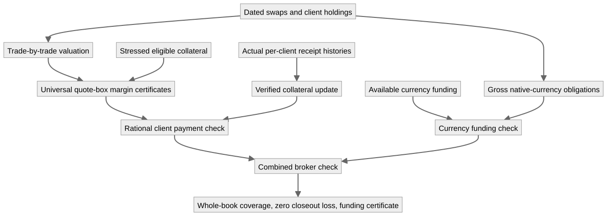

On this page
System correctness: motivating financial examples
For presenting the development to quantitative developers, use Broker2: one engine evolved and its speaker guide. Seven versions keep the same quote/receive contract visible and prove compatibility as clients, stress, rational execution, tolerances, receipt identities and revaluation are added.
For the relational example, start with the read-only calculate
query and its separate
certification. The query reads trade, collateral and receipt tables
and produces a margin-call table through chained enrichment, selection,
grouped sums and scenario maxima. calculate-refines-model
identifies the whole output with the model's plan;
calculate-certified gives properties of each actual
returned row. fulfilling-calculation connects cash covering
those returned requests to the model's client and broker loss bounds.
This demonstration needs no engine execution or concrete market
scenario.
The relational
implementation makes the final model concrete through typed trade,
collateral, and receipt relations. Its separate pipeline-correct
theorem identifies the returned state, remaining report amounts, and
call rows with the model, and certifies the program's actual status tag.
Fulfilled calls imply the same bounds for independent indexed source
sums: every client's residual is at most its MTA, and aggregate residual
and every modeled severity-weighted loss are at most total MTA. Zero MTA
gives zero modeled loss. These results quantify over arbitrary finite
books and supplied stresses, under the documented source contracts; see
the pipeline guide.
The separate generic broker progression now develops these ideas through eight stages without concrete scenarios. Its controller theorem composes inventory-backed collateral, revaluation reserves, minimum transfers and identified receipt processing. Fulfilled calls bound all client residuals and every modeled closeout loss; zero tolerance gives full coverage. Replaying receipt IDs preserves the whole certified state. The scenario-specific results below remain independent applications.
The motivating result is a broker control program whose successful output implies a statement about its entire modeled swap book. The development also contains a trading solver whose failure proves that no competing real portfolio can meet its budget. These statements connect executable decisions to portfolio valuation, collateral state, risk, and settlement obligations.
The main entry points are BrokerGuarantees and TradingGuarantees. Their reusable components are Margin/Workflow and Margin/PaymentHistory.
Broker: a certified control for a whole swap book
Two clients hold opposite portfolios of deliverable FX swaps with foreign notionals 60 and 40. Valuation includes spot and both discount factors; client B posts foreign collateral whose eligible domestic value moves with spot. The broker also owes the actual four far-leg currency exchanges at date 30.
The program receives nonnegative rational cash receipts by client and rational available funding balances by currency. Its exact certificates cover every Cauchy-real quote in the box
spot ∈ [0.8, 1.2]
domestic discount ∈ [0.9, 1]
foreign discount ∈ [0.9, 1]The headline theorem broker-ready≃requirements
states:
brokerReady(receipts, funding) = true
iff
every client's swap claim is covered at every admissible real quote
and every gross outgoing currency obligation has sufficient funding.checkBroker returns a decision carrying a proof of those
requirements or a proof that they do not all hold. Its computation
consists of finite rational comparisons; the whole-box guarantee comes
from independently checked universal margin certificates. The underlying
client checker identifies a deficient client when its coverage
obligation fails. It does not select a violating arbitrary real quote by
classical choice.
broker-end-to-end then constructs
BookGuarantee for the trade-by-trade swap
portfolios, with these three fields:
| Certificate field | Meaning |
|---|---|
swap-portfolios-covered |
Every client's actual two-swap valuation is covered at every quote in the box. |
every-closeout-loss-zero |
Aggregate modeled closeout loss is zero for every quote and every admissible scenario-dependent default/recovery severity. |
gross-settlement-funded |
The four actual far-leg instructions have enough gross funding in each native currency. |
Severity may depend jointly on client identity and market state. No independence assumption or probability-of-default estimate is needed. The theorem permits all clients to default with zero recovery; sufficient available collateral covers the modeled positive replacement claims even in that realization.

A complete margin collection example
The joint box requires total additional collateral, relative to the
initial collateral model, of 25 for A and 108/5 = 21.6 for B. Their
older single-factor calls, 15 and 68/5 = 13.6, have already been
received. The new requests are 10 and 8. The additional receipts below
are processed sequentially by the existing recordPayment
operation, with a theorem connecting its reports to the whole-box
checker.
| Input to the broker control | Executable result | Checked implication |
|---|---|---|
| Receipts (15, 13.6), funding (100, 100) | Refused | Old single-factor payments do not cover the joint box. |
| Receipts (25, 21.6), funding (100, 100) | Ready | Whole-book BrokerGuarantee. |
| A receives 15 then 10; B receives 13.6 then 8; funding (100, 100) | Ready | staged-broker-guarantee for the sequentially updated
collateral state. |
| All 46.6 cash units credited to A and none to B | Refused | Equal aggregate cash does not imply client-by-client coverage. |
| Correct client receipts, funding (200 domestic, 0 foreign) | Refused | Equal reference base value does not fund the required foreign payments. |
These labels are Agda reduction proofs (refl), not
manually assigned expected outcomes. same-total-cash and
same-base-funding-value prove the equal totals in the last
two comparisons, so the failures isolate the client and currency
constraints rather than a simple shortage of aggregate value.
eighteen-is-least-further-cash proves that
every nonnegative real further payment vector covering
all actual swap claims has total at least 18.
requests-componentwise-minimal in the reusable workflow
proves the stronger per-client lower bounds.
request-cycle-ready proves that receiving the computed
requests completes the margin gate for any previously received
nonnegative client balances, provided the separate funding gate is met.
The total is a sum of segregated client requirements, not a pooled
broker risk measure or permission to transfer one client's collateral to
another.
Arbitrary payment histories and representation independence
PaymentHistory operates on arbitrary finite lists of nonnegative rational receipts. Its collateral fold works over any scenario type, including the entire real FX state domain. The main invariant is
sequentially credited collateral = original collateral + total receipts
processed outstanding call = max(original call - total receipts, 0).processHistory-batch identifies the complete sequential
exact report with a single batched update after transporting it to the
same collateral state. processHistory-same-total and the
batch-swap theorem show the same result for histories with equal totals.
Equality includes the proof-bearing report, not only its numeric amount.
Rational report uniqueness and proposition-valued proof fields justify
this cubical transport.
In the broker application, history-end-to-end transports
the entire book certificate to the actual sequential collateral
function, for arbitrary histories of both clients.
history-reports-agree links each iterative report to the
outstanding request used by the universal-domain workflow.
history-batching-invariant proves that equal
per-client totals preserve the complete broker decision
with the same funding balances.
These results assume a fixed valuation model and eligible received domestic cash throughout a history. They do not cover withdrawals or revaluation between steps. A receipt is mathematical input representing money actually received; there is no event-ID deduplication or bank/custodian connection. Recording the same receipt twice credits it twice.
What scales, and what is supplied
CertifiedClients is parameterized by any finite
number of client netting sets and an arbitrary admissible
scenario domain. Its theorems quantify over all clients, all admissible
states, all allowed severity functions, and all nonnegative real
further-payment competitors. Receipt histories have no fixed length. The
two-client FX book is a concrete instantiation of this reusable
interface. No throughput, memory benchmark, or production deployment is
claimed.
Each client supplies an exact rational margin amount together with a
proved MarginCertificate for its scenario domain. The
finite construction and the joint FX box both supply such certificates.
The checker does not construct exact rational certificates for every
arbitrary real dataset.
The available-collateral and funding inputs must have their stated meaning: client netting must be authorized, collateral must be realizable and available, and the independent currency balances must not double-count that collateral. The formalization checks the consequences of these inputs, not custody or legal facts. Sources motivating these distinctions are recorded in REFERENCES.md; quote bounds and haircuts remain synthetic model inputs.
The combined check certifies margin coverage and gross
funding. Settlement principal risk requires an additional
delivery condition. If each actual exchange satisfies the supplied
AtomicBook payment-versus-payment law,
closeout-and-principal-zero proves that the sum of modeled
closeout loss and settlement principal loss is zero. The check does not
establish that protocol law or actual settlement completion, and the
theorem does not assert that all market, operational, or funding costs
vanish.
Trading: complete feasibility against real portfolios
TradingGuarantees
strengthens the existing fee-aware optimizer into a certified
feasibility solver. For every rational nonnegative fee parameter
s and rational budget b,
solve(s, b) succeeds
iff there exists a real two-asset holding u with sum(u) = 1
whose actual all-in loss is accepted at budget b.Competitors are arbitrary Cauchy-real holdings, including short
positions. holdings-complete proves that the optimizer's
parameterization represents every such vector.
execution-implementation connects its loss formula to
TransactionCosts.allInLoss, including the actual
proportional fee definition.
The execute branch returns ApprovedTrade: a
normalized long-only allocation, nonnegative fee rates, acceptance of
its actual all-in loss, an exact rational optimal CVaR, and a lower
bound against every real competitor and threshold. The
reject branch returns AllRejected, refuting
acceptance for every normalized real competitor.
Rejection therefore establishes global infeasibility for this problem,
not merely failure of the chosen allocation.
solver-pass≃feasible identifies the program's Boolean
success with the propositionally truncated existence statement.
solver-policy-path uses univalence to make these
certificate interfaces interchangeable. Given merely truncated
feasibility, reconstructTrade computes the canonical
approved order without selecting a hidden existential witness.
| Fee and budget | Result |
|---|---|
| Fee 1, budget 2 | Executable rejection and a proof of impossibility for all real normalized holdings. |
| Fee 1, budget 9/4 | Executable success, allocation (3/4, 1/4), actual fee 1/4, globally least CVaR 9/4. |
Completeness here is for the supplied two-asset, four-scenario, uniform 50%-tail market and proportional-cost model. Fees enter losses; a self-financing execution ledger is not included. The feasibility predicate does not also impose a mean, worst-case stress, or funding constraint. The separate stress-constrained example shows why such constraints must be stated explicitly: at fee 1 and raw stress cap 3, the least CVaR becomes 19/8, so budget 9/4 is infeasible. Optimizer uniqueness is not claimed.
Theorem map and validation
| Property to cite | Module and named result |
|---|---|
| Broker decision exactly matches universal margin and funding requirements | BrokerGuarantees.broker-ready≃requirements |
| Success protects actual swap claims against all modeled closeout realizations | BrokerGuarantees.broker-end-to-end |
| Arbitrary receipt histories preserve that whole-book guarantee | BrokerGuarantees.history-end-to-end |
| Minimum extra cash after the older payments | BrokerGuarantees.eighteen-is-least-further-cash |
| Client/currency accounting cannot be replaced by aggregate values | misallocated-cash-refused,
wrong-currency-funding-refused |
| Generic client workflow is sound, complete and produces minimal requests | Margin.Workflow.CertifiedClients |
| Sequential and batched updates give equal proof-bearing reports | PaymentHistory.processHistory-batch,
processHistory-same-total |
| Trading success exactly means real portfolio feasibility | TradingGuarantees.solver-pass≃feasible |
| Trading failure rules out every competitor | TradingGuarantees.failure-certificate |
agda-codex Cubical/HITs/CauchyReals/Example/Financial/Theory.agda
agda-codex Cubical/HITs/CauchyReals/Example/Financial.agdaAll proofs use the existing safe Cubical Agda foundations. No additional analysis assumptions, postulates, arbitrary-real order tests, or optimizer existence axioms are introduced. Final compiler outcomes and independent reviews are recorded in PROGRESS.md.